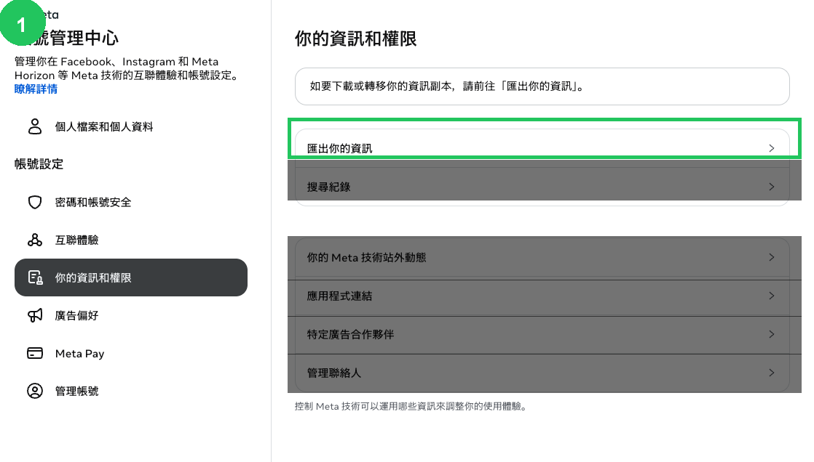
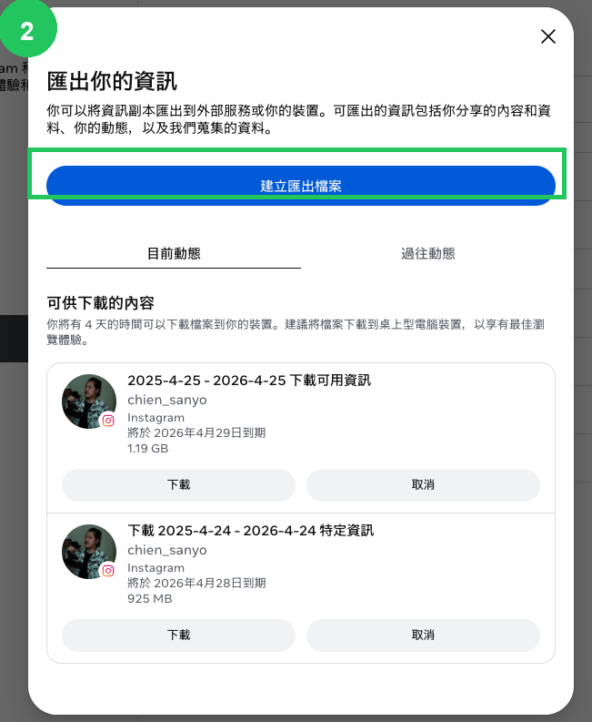
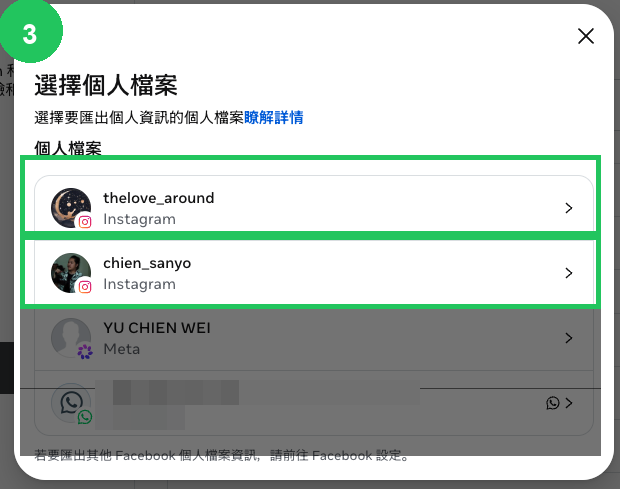
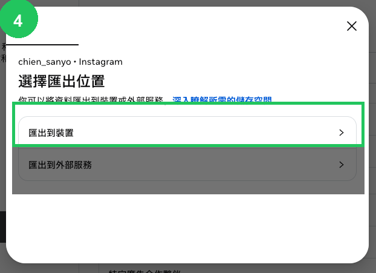
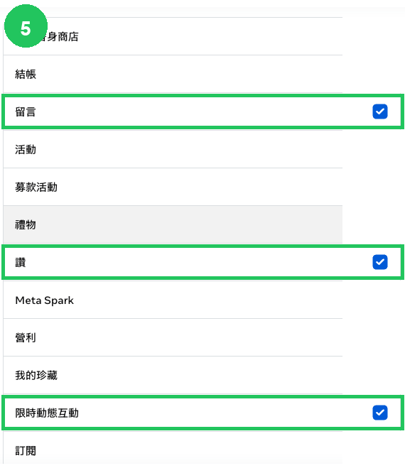
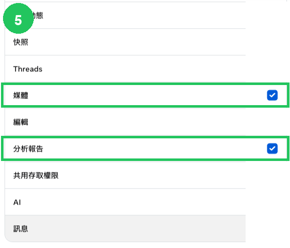
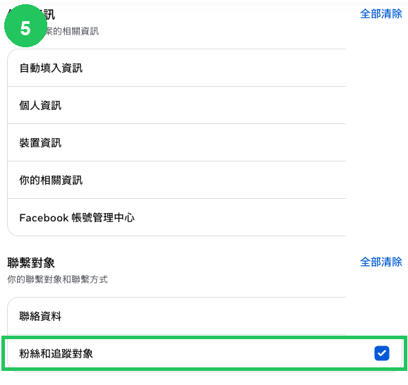
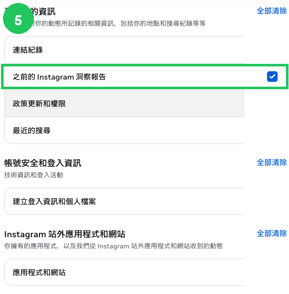
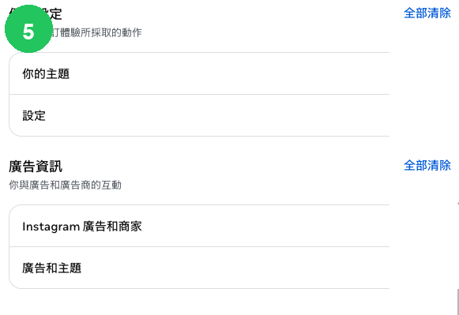
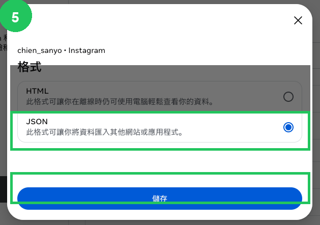

請依照以下步驟，將您的 Instagram 帳號數據匯出，並將下載的壓縮檔傳給我們。全程約需 5 分鐘操作，等待時間視帳號數據量而定。
前往 accountscenter.instagram.com，在左側選單點「你的資訊和權限」，然後點右側的「匯出你的資訊」。

點藍色按鈕「建立匯出檔案」，進入匯出流程。

選擇要匯出的 Instagram 帳號（綠框處）。Meta 帳號和 WhatsApp 不需要選。

選「匯出到裝置」，這樣資料會下載到你的電腦。

這個畫面會列出所有可匯出的資料類型。只需要勾選下方標示綠框的項目，其他全部取消勾選（或保持空白）。





格式請選「JSON」（不要選 HTML），然後按「儲存」。Meta 會在幾分鐘到幾小時內寄通知，告知資料已準備好可以下載。
